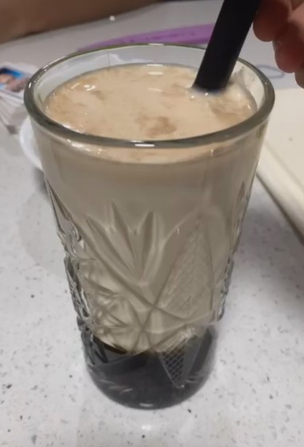

Brown Sugar Bubble Tea

Ingredients:
Instructions:
- Mix the brown sugar and water in a pot and heat until the brown sugar completely dissolves.
- Add in the cooked boba and reduce heat to a simmer. Let simmer for about 15-20 minutes. Optionally if the syrup has not achieved the desired thickness after 20 minutes, remove the boba from the syrup and continue to simmer until it reaches the desired thickness. Then add the boba back in.
- Once the syrup is thickened, remove from heat and let rest for about 30 minutes.
- Place your desired amount of the brown sugar and boba mixture into a cup. Optionally, you can tilt the cup in a circular motion to allow the syrup to coat the inside of the cup.
- Pour in base of choice and mix.